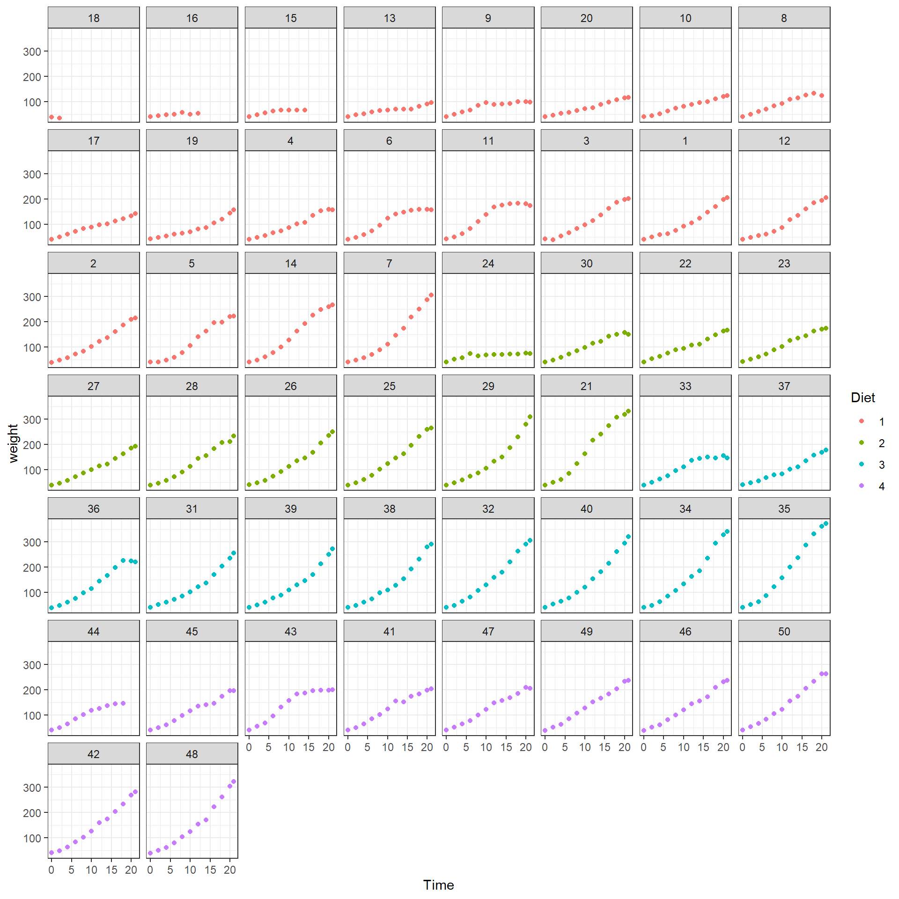
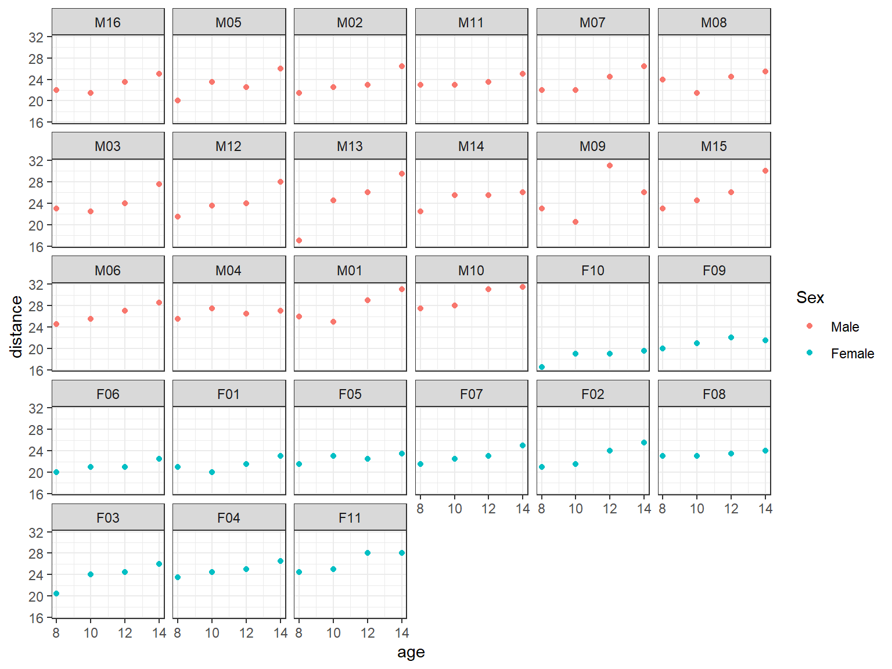
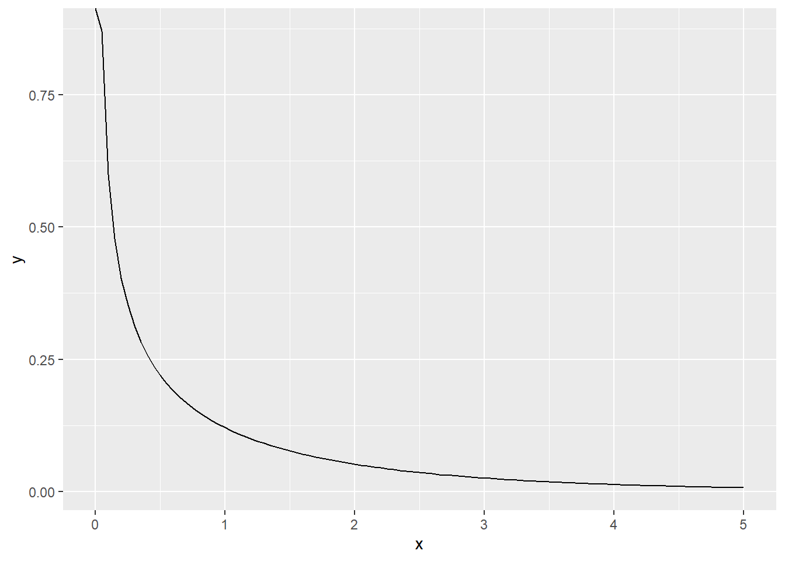
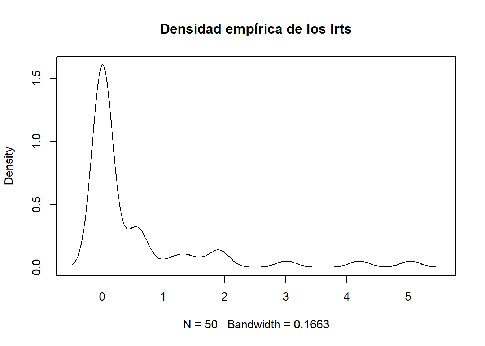

11 Pruebas de hipótesis
En este capítulo se muestran las pruebas de hipótesis para comparar modelos mixtos.
11.1 Prueba razón de verosimilitud
Supongamos que queremos estudiar \(H_0: \boldsymbol{\theta} \in \boldsymbol{\Theta}_0\) versus \(H_A: \boldsymbol{\theta} \in \boldsymbol{\Theta}\). La prueba razón de verosimilitud (\(LR\)) para \(H_0\) está dada por:
\[ LR = -2 \log \left( \frac{ sup_{\theta \in \boldsymbol{\Theta}_0} L(\theta)}{ sup_{\theta \in \boldsymbol{\Theta}} L(\theta)} \right). \]
Usualmente la prueba de razón de verosimilitud se expresa en función de los valores de log-verosimilitud del modelo así:
\[ LR = -2 ( l(\boldsymbol{\theta}_0) - l(\hat{\boldsymbol{\theta}}) ), \]
y el estadístico \(LR \sim \chi^2_{k-k_0}\), donde \(k\) es el número de parámetros del modelo estimado y \(k_0\) el número de parámetros del modelo asumiendo \(H_0\) verdadera.
El vector \(\boldsymbol{\theta}_0\) es el vector de parámetros asumiendo que \(H_0\) es verdadera mientras que \(\hat{\boldsymbol{\theta}}\) es el vector de parámetros del modelo más general.
11.2 Prueba de Wald
Si el interés es estudiar \(H_0: \beta_k = \beta_{k0}\) contra \(H_A: \beta_k \neq \beta_{k0}\) se puede usar la prueba de Wald que tiene el siguiente estadístico:
\[ t = \frac{\hat{\beta}_k - \beta_{k0}}{se(\hat{\beta}_k)}, \]
donde \(se(\hat{\beta}_k)\) corresponde al error estándar de la estimación \(\hat{\beta}_k\), todo esto disponible en el summary del modelo ajustado. Si \(H_0\) es verdadera, \(t \sim t_{n-p}\), siendo \(n\) el número de observaciones y \(p\) el número de efectos fijos estimados (no el número de variables) en el modelo.
11.3 Prueba de hipótesis sobre los efectos fijos
La prueba razón de verosimilitud puede ser usada para comparar modelos ajustados por el método ML y que difieran en su estructura de efectos fijos, pero con la mismas componentes de varianza. Los valores-P de la prueba pueden ser anticonservativos, es decir, más pequeños de lo normal y por lo tanto se podría rechazar \(H_0\) más fácilmente (J. Pinheiro and Bates 2000). En lugar de usar la distribución \(\chi^2\) para el estadístico de la prueba razón de verosimilitud, se recomienda usar la distribución empírica del estadístico, obtenida al ajustar los modelos nulo y alternativo con múltiples conjuntos de datos simulados (Galecki and Burzykowski 2012).
Ejemplo

La base de datos ChickWeight contiene información sobre el peso de un grupo de pollos versus el tiempo bajo diferentes dietas. Abajo una ilustración de los datos.
library(ggplot2)
ggplot(data = ChickWeight, aes(x = Time, y = weight, color = Diet)) +
geom_point() +
theme_bw() +
facet_wrap(~ Chick)
El objetivo es comparar los siguientes dos modelos.
Modelo 1
\[\begin{align*} Weight_{ij} &\sim N(\mu_{ij}, \sigma^2_{weight}) \\ \mu_{ij} &= \beta_0 + \beta_1 tiempo_{ij} + b_{0i} \\ b_{0} &\sim N(0, \sigma^2_{b0}) \end{align*}\]
Modelo 2
\[\begin{align*} Weight_{ij} &\sim N(\mu_{ij}, \sigma^2_{weight}) \\ \mu_{ij} &= \beta_0 + \beta_1 tiempo_{ij} + \beta_2 dieta2_{i} + \beta_3 dieta3_{i} + \beta_4 dieta4_{i} + b_{0i} \\ b_{0} &\sim N(0, \sigma^2_{b0}) \end{align*}\]
El problema de este ejercicio se puede resumir con \(H_0:\) la variable Dieta no aporta al modelo, versus, \(H_A:\) la variable Dieta si aporta al modelo.
Para ajustar ambos modelos se usa el siguiente código.
library(nlme)
mod1 <- lme(weight ~ Time, data = ChickWeight, random = ~ 1 | Chick, method='ML')
mod2 <- lme(weight ~ Time + Diet, data = ChickWeight, random = ~ 1 | Chick, method='ML')Para calcular la prueba razón de verosimilitud se usa el siguiente código.
lrt <- -2 * (logLik(mod1) - logLik(mod2))
lrt## 'log Lik.' 17.14349 (df=4)pchisq(q=lrt, df=7-4, lower.tail=FALSE)## 'log Lik.' 0.000660304 (df=4)De la salida anterior se tiene que el valor-P = 0.000660304 y menor que cualquier \(\alpha\). Sin embargo, como este valor-P puede ser “anticonservativo” (más pequeño de lo que debería ser), es mejor no sacar conclusiones apresuradas y rechazar \(H_0\).
La prueba de verosimilitud se puede obtener también así:
anova(mod1, mod2)## Model df AIC BIC logLik Test L.Ratio p-value
## mod1 1 4 5630.344 5647.782 -2811.172
## mod2 2 7 5619.201 5649.718 -2802.600 1 vs 2 17.14349 7e-04Para obtener un valor-P más acorde al problema podemos usar simulación. La función simulate.lme simula datos de modelos especificados por medio de los argumentos object y m2, ajusta los modelos, y entrega los valores de log-verosimilitud, con los se puede obtener el estadístico de la prueba de razón de verosimilitud. A continuación el código para obtener el valor-P con simulación.
simul <- simulate.lme(object=mod1, m2=mod2, method = 'ML', nsim=1000)
lrts_nlme <- -2 * (simul$null$ML[, 2] - simul$alt$ML[, 2])
acumulada1 <- ecdf(x=lrts_nlme) # F(x) para los valores LRT
1 - acumulada1(17.14349)## [1] 0.001De la salida anterior se tiene que el valor-P = 0.001 y ya no es tan pequeño como el valor-P anterior. Por esta razón hay evidencias rechazar \(H_0\) y por lo tanto la variable Dieta si aporta al modelo.
Ejemplo
La base de datos Orthodont contiene información sobre una medida de distancia intrafacial para jóvenes sometidos a ortodoncia.
data(Orthodont, package="nlme")
library(ggplot2)
ggplot(data = Orthodont, aes(x = age, y = distance, color = Sex)) +
geom_point() +
theme_bw() +
facet_wrap(~ Subject)
El objetivo es comparar los siguientes dos modelos.
Modelo 1
\[\begin{align*} Distance_{ij} &\sim N(\mu_{ij}, \sigma^2_{distance}) \\ \mu_{ij} &= \beta_0 + \beta_1 age_{ij} + b_{0i} \\ b_{0} &\sim N(0, \sigma^2_{b0}) \end{align*}\]
Modelo 2
\[\begin{align*} Distance_{ij} &\sim N(\mu_{ij}, \sigma^2_{distance}) \\ \mu_{ij} &= \beta_0 + \beta_1 age_{ij} + \beta_2 SexFemale_i + b_{0i} \\ b_{0} &\sim N(0, \sigma^2_{b0}) \end{align*}\]
El problema de este ejercicio se puede resumir con \(H_0:\) la variable Sexo no aporta al modelo, versus, \(H_A:\) la variable Sexo si aporta al modelo.
Para ajustar ambos modelos se usa el siguiente código.
library(lme4)
mod1 <- lmer(distance ~ age + (1|Subject), data=Orthodont, REML=FALSE)
mod2 <- lmer(distance ~ age + Sex + (1|Subject), data=Orthodont, REML=FALSE)Para calcular la prueba razón de verosimilitud se usa el siguiente código.
lrt <- -2 * (logLik(mod1) - logLik(mod2))
lrt## 'log Lik.' 8.533057 (df=4)pchisq(q=lrt, df=5-4, lower.tail=FALSE)## 'log Lik.' 0.003487534 (df=4)De la salida anterior se tiene que el valor-P = 0.003487534 y menor que cualquier \(\alpha\). Sin embargo, como este valor-P puede ser “anticonservativo” (más pequeño de lo que debería ser), es mejor no sacar conclusiones apresuradas y rechazar \(H_0\).
La prueba de verosimilitud se puede obtener también así:
anova(mod1, mod2)## Data: Orthodont
## Models:
## mod1: distance ~ age + (1 | Subject)
## mod2: distance ~ age + Sex + (1 | Subject)
## npar AIC BIC logLik deviance Chisq Df Pr(>Chisq)
## mod1 4 451.39 462.12 -221.69 443.39
## mod2 5 444.86 458.27 -217.43 434.86 8.5331 1 0.003488 **
## ---
## Signif. codes: 0 '***' 0.001 '**' 0.01 '*' 0.05 '.' 0.1 ' ' 1Para obtener un valor-P más acorde al problema podemos usar simulación. La función simulate.lme simula respuestas \(y_{ij}\) del modelo dado. A continuación el código para obtener el valor-P con simulación (¡tarda varios minutos!).
nrep <- 5000
lrts_lme4 <- numeric(nrep)
for (i in 1:nrep) {
new_y_h0 <- simulate(mod1) # Asumiendo H0 verdadera
Orthodont$new_y_h0 <- new_y_h0$sim_1
aux0 <- lmer(new_y_h0 ~ age + (1|Subject), data=Orthodont, REML=FALSE)
aux1 <- lmer(new_y_h0 ~ age + Sex + (1|Subject), data=Orthodont, REML=FALSE)
lrts_lme4[i] <- -2 * (logLik(aux0) - logLik(aux1))
}
acumulada2 <- ecdf(x=lrts_lme4) # F(x) para los valores LRT
1 - acumulada1(8.533057)## [1] 0.005De la salida anterior se tiene que el valor-P = 0.005 y ya no es tan pequeño como el valor-P anterior. Por esta razón hay evidencias rechazar \(H_0\) y por lo tanto la variable Sexo si aporta al modelo.
11.4 Prueba de hipótesis sobre componentes de varianza
Las componentes de varianza corresponden a las varianzas y covarianzas del vector de efectos aleatorios. La prueba razón de verosimilitud puede ser usada para comparar modelos ajustados por el método REML y que difieran en sus componentes de varianza, pero que tenga igual estructura de efectos fijos.
Para hacer pruebas de hipótesis sobre las componentes de varianza se tienen dos casos que se explican en las siguientes subsecciones.
11.4.2 Componentes de varianza en el borde
Este caso se presenta cuando la hipótesis nula considera que uno o varios parámetros están justo en el borde del dominio del parámetro en cuestion. Por ejemplo, si queremos estudiar la inclusión del intercepto aleatorio \(b_0\) en un modelo de regresión clásico, tendríamos las siguientes hipótesis: \(H_0: \sigma^2_{b0} = 0\) versus \(H_A: \sigma^2_{b0} > 0\). Debido a la condición de \(\sigma^2_{b0}\) en \(H_0\), se dice que esa componente de varianza está en el borde de su dominio, ya que \(\sigma^2_{b0}\) no puede ser negativa. En este ejemplo particular, rechazar \(H_0\) implicaría que es apropiado incluir \(b_0\) en el modelo.
En el caso de componentes de varianza cerca de la frontera la distribución del estadístico razón de verosimilitud no es exactamente una \(\chi^2\) (Galecki and Burzykowski 2012). En la sección 6.3.4 de (Verbeke and Molenberghs 2000) se listan cuatro casos en los cuales se usan mezclas de distribuciones corregir la distribución del estadístico y así calcular el valor-P corregido en la prueba razón de verosimilitud. Los cuatro casos son los siguientes:
- Sin efecto aleatorio versus 1 efecto aleatorio: en este caso lo que interesa es \(H_0: \sigma^2_{b} = 0\) versus \(H_A: \sigma^2_{b} > 0\), la distribución asintótica del estadístico de razon de verosimilitud es una mezcla de \(\chi^2_1\) y \(\chi^2_0\) con pesos iguales a 0.5.
- 1 efecto aleatorio versus 2 efectos aleatorios: en este caso lo que interesa es \(H_0: \boldsymbol{D} = \begin{pmatrix} d_{11} & 0 \\ 0 & 0 \end{pmatrix}\) versus \(H_A: \boldsymbol{D} \neq \boldsymbol{0}\) para un \(d_{11}>0\), en este caso la distribución asintótica del estadístico razón de verosimilitud es una mezcla de \(\chi^2_2\) y \(\chi^2_1\) con pesos iguales a 0.5.
- \(q\) efectos aleatorios versus \(q+1\) efectos aleatorios: en este caso lo que interesa es \(H_0: \boldsymbol{D} = \begin{pmatrix} \boldsymbol{D_{11}} & \boldsymbol{0}\\ \boldsymbol{0}^\top & 0 \end{pmatrix}\) donde \(\boldsymbol{D_{11}}\) es una matriz de covarianzas (positiva definida) de dimensión \(q \times q\) versus que \(\boldsymbol{D}\) es una matriz general de dimensión \(q+1 \times q+1\). En este caso la distribución asintótica del estadística razón de verosimilitud es una mezcla de \(\chi^2_{q+1}\) y \(\chi^2_q\) con pesos iguales a 0.5.
- \(q\) efectos aleatorios versus \(q+k\) efectos aleatorios: en este caso lo que interesa es \(H_0: \boldsymbol{D} = \begin{pmatrix} \boldsymbol{D_{11}} & \boldsymbol{0}\\ \boldsymbol{0}^\top & \boldsymbol{0} \end{pmatrix}\) donde \(\boldsymbol{D}\) es una matriz de covarianzas (positiva definida) de dimensión \(q+k \times q+k\) versus que \(H_A: \boldsymbol{D} = \begin{pmatrix} \boldsymbol{D_{11}} & \boldsymbol{D_{12}}\\ \boldsymbol{D_{12}}^\top & \boldsymbol{D_{22}} \end{pmatrix}\) es una matriz general de dimensión \(q+k \times q+k\). En este caso la distribución asintótica del estadística razón de verosimilitud es una mezcla de \(\chi^2_{q+k}\) y \(\chi^2_q\) con pesos iguales a 0.5.
Si la distribución nula del estadístico razón de verosimilitud no puede ser obtenida analíticamente, una posible solución es usar la distribución empírica del estadístico obtenida al ajustar múltiples modelos nulos y alternativos (Galecki and Burzykowski 2012).
Ejemplo
Simule 10 observaciones para cada uno de los 10 grupos siguiendo el siguiente modelo y luego aplique la prueba de razón de verosimilitud para estudiar \(H_0: \sigma^2_{b0} = 0\) versus \(H_A: \sigma^2_{b0} > 0\).
\[\begin{align*} y_{ij} &\sim N(\mu_{ij}, \sigma^2_y) \\ \mu_{ij} &= 4 - 6 x_{ij} + b_{0i} \\ \sigma^2_y &= 4 \\ b_{0} &\sim N(0, \sigma^2_{b0}=4) \\ x_{ij} &\sim U(0, 10) \end{align*}\]
La función gen_dat_b0 de abajo permite simular m observaciones de n grupos con intercepto aleatorio \(b_0 \sim N(0, \sigma^2_{b0})\). Adicionalmente, es posible elegir los efectos fijos beta0, beta_1 y la varianza sigma de la variable respuesta.
gen_dat_b0 <- function(n, m, beta0, beta1, sigmay, sigmab0, seed=NULL) {
if(is.null(seed)) seed <- as.integer(runif(1)*2e9)
group <- rep(1:n, each=m)
set.seed(seed)
b0 <- rep(rnorm(n=n, mean=0, sd=sigmab0), each=m)
set.seed(seed)
x <- runif(n=n*m, min=0, max=10)
set.seed(seed)
y <- rnorm(n=n*m, mean=beta0 + beta1 * x + b0, sd=sigmay)
data.frame(group=group, x=x, y=y)
}Vamos ahora a generar 10 observaciones para 10 grupos con intercepto aleatorio con una varianza \(\sigma^2_{b0}=2^2=4\). La semilla se va a fijar en un valor de 1220872376 por cuestiones didácticas.
datos <- gen_dat_b0(n=10, m=10,
beta0=4, beta1=-6,
sigmay=2, sigmab0=2, seed=1220872376)
head(datos)## group x y
## 1 1 3.817132 -20.106729
## 2 1 8.951117 -49.950457
## 3 1 5.710726 -33.154170
## 4 1 7.451320 -39.583303
## 5 1 1.263282 -1.070788
## 6 1 6.114367 -33.423587Vamos a ajustar dos modelos, el primero sin incluir \(b_0\) y el segundo incluyendo \(b_0\).
library(nlme)
fit1 <- gls(y ~ x, data=datos, method="REML") # Igual resultado con lm
fit2 <- lme(y ~ x, random = ~ 1| group, data=datos, method="REML")Resultados del primer modelo.
summary(fit1)## Generalized least squares fit by REML
## Model: y ~ x
## Data: datos
## AIC BIC logLik
## 475.8248 483.5797 -234.9124
##
## Coefficients:
## Value Std.Error t-value p-value
## (Intercept) 4.64931 0.5180190 8.97517 0
## x -6.00175 0.0814173 -73.71588 0
##
## Correlation:
## (Intr)
## x -0.875
##
## Standardized residuals:
## Min Q1 Med Q3 Max
## -2.14346496 -0.64999607 -0.06461389 0.60660976 3.48238119
##
## Residual standard error: 2.50842
## Degrees of freedom: 100 total; 98 residualResultados del segundo modelo.
summary(fit2)## Linear mixed-effects model fit by REML
## Data: datos
## AIC BIC logLik
## 474.7777 485.1175 -233.3888
##
## Random effects:
## Formula: ~1 | group
## (Intercept) Residual
## StdDev: 0.8166724 2.383898
##
## Fixed effects: y ~ x
## Value Std.Error DF t-value p-value
## (Intercept) 4.640053 0.5652943 89 8.20821 0
## x -6.000087 0.0795348 89 -75.43973 0
## Correlation:
## (Intr)
## x -0.783
##
## Standardized Within-Group Residuals:
## Min Q1 Med Q3 Max
## -2.19536246 -0.56396957 0.05433633 0.61634184 3.29594400
##
## Number of Observations: 100
## Number of Groups: 10Ahora vamos a calcular el estadístico y su valor-P.
lrt <- -2 * (logLik(fit1) - logLik(fit2))
lrt## 'log Lik.' 3.04712 (df=3)p_value <- pchisq(q=3.04712, df=1, lower.tail=FALSE)
p_value## [1] 0.08088045De la salida anterior se tiene que \(valor-P = 0.0809\) y como \(\alpha=0.05\), por lo tanto NO hay evidencias para rechazar \(H_0: \sigma^2_{b0} = 0\). ¿No es extraña esta conclusión 🤔?
Lo anterior ocurre porque la distribución del estadístico \(LR\) no es un \(\chi^2\) sino una mezcla de distribuciones \(\chi^2_1\) y \(\chi^2_0\) con pesos iguales a 0.5. A continuación vamos a mostrar la distribución de \(LR\) en este ejemplo.
library(emdbook) # Para usar la función dchibarsq
library(ggplot2)
ggplot(data = data.frame(x = 0), mapping = aes(x = x)) +
stat_function(fun = dchibarsq, args = list(df = 1)) +
xlim(0, 5)
Para calcular el valor-P de la prueba hacemos
pchibarsq(p=3.04712, df = 1, mix = 0.5, lower.tail=FALSE)## [1] 0.04044023También es posible obtener el valor-P usando simulación. Vamos a simular 50 conjuntos de datos suponiendo \(H_0\) verdadera y luego calcularemos los lrt para así tener la distribución empírica de los lrt bajo la hipótesis nula \(H_0: \sigma^2_{b0} = 0\) verdadera. En un aplicación se deberían generar más conjuntos de pero aquí vamos a usar sólo 50 por comodidad.
pseudo_gen_dat <- function(nobs, beta0, beta1, sigmay) {
group <- datos$group # Aqui la diferencia
x <- datos$x # Aqui la diferencia
y <- rnorm(n=nobs, mean=beta0 + beta1 * x, sd=sigmay)
data.frame(group=group, x=x, y=y)
}
nrep <- 50
lrts <- numeric(nrep)
for (i in 1:nrep) {
pseudo_datos <- pseudo_gen_dat(nobs=100, beta0=4.64931,
beta1=-6.00175, sigma=2.50842)
m1 <- gls(y ~ x, data=pseudo_datos, method="REML")
m2 <- lme(y ~ x, random = ~ 1| group, data=pseudo_datos, method="REML")
lrts[i] <- -2 * (logLik(m1) - logLik(m2))
}Dibujando la densidad de los lrt.
plot(density(lrts), main='Densidad empírica de los lrts')
Calculando el valor-P.
acumulada <- ecdf(x=lrts) # F(x) para los valores LRT
1 - acumulada(3.04712) # Valor-P## [1] 0.04De la salida anterior se tiene que \(valor-P < \alpha\) por lo tanto SI hay evidencias para rechazar \(H_0: \sigma^2_{b0} = 0\). ¿Es esto coherente ahora 🙂?
nrep <- 50, en la práctica ese número de repeticiones debería subir al menos a 1000. Repita el procedimiento anterior con nrep <- 5000 y observe lo que sucede.
El paquete RLRsim de Scheipl (2022) tiene la función exactRLRT que permite extraer el valor-P mediante simulación. Abajo un ejemplo de como usarla en el presente ejemplo.
library(RLRsim)
exactRLRT(m=fit2, nsim=1000)##
## simulated finite sample distribution of RLRT.
##
## (p-value based on 1000 simulated values)
##
## data:
## RLRT = 3.0471, p-value = 0.039exactRLRT para que conozca sus posibilidades y limitaciones.
Ejemplo
Simule 10 observaciones para cada uno de los 10 grupos siguiendo el siguiente modelo y luego aplique la prueba de razón de verosimilitud para estudiar \(H_0:\) el modelo con intercepto aleatorio está bien versus \(H_A:\) se necesita intercepto y pendiente aleatoria.
\[\begin{align*} y_{ij} &\sim N(\mu_{ij}, \sigma^2_y) \\ \mu_{ij} &= 4 - 6 x_{ij} + b_{0i} + b_{1i} x_{ij} \\ \sigma^2_y &= 4 \\ \left ( \begin{matrix} b_{0} \\ b_{1} \end{matrix} \right ) &\sim N\left ( \left ( \begin{matrix} 0 \\ 0 \end{matrix} \right ), \left ( \begin{matrix} \sigma^2_{b0}=10 & \sigma_{b01}=3 \\ \sigma_{b01}=3 & \sigma^2_{b1}=2 \end{matrix} \right ) \right ) \\ x_{ij} &\sim U(0, 10) \end{align*}\]
La función gen_dat_b0_b1 de abajo permite simular m observaciones de n grupos con intercepto y pendiente aleatoria según el modelo exigido.
gen_dat_b0_b1 <- function(n, m, beta0, beta1,
sigma2y,
sigma2b0, sigma2b1, sigmab0b1,
seed=NULL) {
if(is.null(seed)) seed <- as.integer(runif(1)*2e9)
group <- rep(1:n, each=m)
Sigma <- matrix(c(sigma2b0, sigmab0b1,
sigmab0b1, sigma2b1), ncol=2, nrow=2)
set.seed(seed)
b <- MASS::mvrnorm(n=n, mu=c(0, 0),
Sigma=Sigma, empirical=TRUE)
b <- apply(X=b, MARGIN=2, rep, each=m)
b0 <- b[, 1] # Extrayendo los b0
b1 <- b[, 2] # Extrayendo los b1
set.seed(seed)
x <- runif(n=n*m, min=0, max=10)
mu <- beta0 + beta1 * x + b0 + b1 * x
set.seed(seed)
y <- rnorm(n=n*m, mean=mu, sd=sqrt(sigma2y))
data.frame(group=group, x=x, y=y)
}Vamos ahora a generar 10 observaciones para 10 grupos con intercepto y pendiente aleatoria. La semilla se va a fijar en un valor de 1234 por cuestiones didácticas.
datos <- gen_dat_b0_b1(n=10, m=10,
beta0=4, beta1=-6,
sigma2y=4,
sigma2b0=10, sigma2b1=2, sigmab0b1=3,
seed=1234)
head(datos)## group x y
## 1 1 1.137034 -6.60088
## 2 1 6.222994 -39.51716
## 3 1 6.092747 -36.98415
## 4 1 6.233794 -44.83962
## 5 1 8.609154 -56.04992
## 6 1 6.403106 -40.33074Vamos a ajustar dos modelos, el primero sólo con \(b_0\) y el segundo incluyendo \(b_0\) y \(b_1\).
library(lme4)
fit0 <- lmer(y ~ x + (1 | group), data=datos, REML=TRUE)
fit1 <- lmer(y ~ x + (1 + x | group), data=datos, REML=TRUE)Vamos a calcular ahora el valor del estadístico de la prueba razón de verosimilitudes así:
lrt <- -2 * (logLik(fit0) - logLik(fit1))
lrt## 'log Lik.' 122.1118 (df=4)Como la distribución del estadístico es una mezcla de distribuciones vamos a calcular el valor P de la siguiente manera.
p_value <- 0.5 * (1-pchisq(lrt, 1)) + 0.5 * (1-pchisq(lrt, 2))
p_value <- as.numeric(p_value)
p_value # p-value from equal mixture chi_1^2:chi_2^2## [1] 0De la salida anterior vemos que el valor-P es muy pequeño, eso significa que rechazamos \(H_0\) y concluimos que el modelo con \(b_0\) y \(b_1\) es más apropiado que el modelo que tiene sólo intercepto aleatorio. La conclusión a la que llegamos es correcta porque así fue que generamos los datos.
Es posible obtener el valor-P anterior usando boostrap por medio de la función PBmodcomp del paquete pbkrtest de Halekoh and Højsgaard (2021).
library(pbkrtest)
PBmodcomp(largeModel=fit1, smallModel=fit0, nsim=1000, seed=123)Bootstrap test; time: 21.86 sec; samples: 1000; extremes: 0;
Requested samples: 1000 Used samples: 999 Extremes: 0
large : y ~ x + (1 + x | group)
y ~ x + (1 | group)
stat df p.value
LRT 122.82 2 <2e-16 ***
PBtest 122.82 0.001 ***
---
Signif. codes: 0 ‘***’ 0.001 ‘**’ 0.01 ‘*’ 0.05 ‘.’ 0.1 ‘ ’ 1En el código anterior se usó la semilla seed = 123 para simular los nuevos conjuntos de datos. De la salida anterior se observa que el valor-P es 0.001 con lo que se concluye que hay evidencias para rechazar \(H_0\).
PBmodcomp es necesario que los modelos sean de la clase lme4. Consulte la ayuda de la función para más detalles.
Ejercicios
¿Qué son modelos anidados? ¿Son modelos que usan datos relacionados con aves?
Considere la base de datos
sleepstudydel paquete lme4. El objetivo es comparar los siguientes dos modelos.
Modelo 1
\[\begin{align*} Reaction_{ij} &\sim N(\mu_{ij}, \sigma^2_{reaction}) \\ \mu_{ij} &= \beta_0 + \beta_1 days_{ij} + b_{0i} + b_{1i} days_{ij} \\ (b_0, b_1)^\top &\sim N(\boldsymbol{0}, \boldsymbol{D}) \end{align*}\]
Modelo 2
\[\begin{align*} Reaction_{ij} &\sim N(\mu_{ij}, \sigma^2_{reaction}) \\ \mu_{ij} &= \beta_0 + \beta_1 days_{ij} + \beta_2 days_{ij}^2 + b_{0i} + b_{1i} days_{ij} \\ (b_0, b_1)^\top &\sim N(\boldsymbol{0}, \boldsymbol{D}) \end{align*}\]
Escriba las hipótesis del problema en forma simbólica y en lenguaje sencillo. Aplique la prueba razón de verosimilitud usando simulación y concluya. Rta: el valor-P \(\approx\) 0.136.
Considere el ejemplo del capítulo 8 sobre el estudio de crecimiento de un grupo de jóvenes. Aplique la prueba razón de verosimilitud para estudiar \(H_0: \sigma^2_{b0} = 0\) versus \(H_A: \sigma^2_{b0} > 0\), es decir, ajuste un modelo lineal simple para explicar la estatura en función de la edad y luego un modelo mixto con intercepto aleatorio. ¿Cuál de los dos modelos parece explicar mejor los datos? Use \(\alpha=0.06\).
En este enlace está la pregunta de un usuario de StackExange sobre prueba de hipótesis (PH).
- ¿Fue la pregunta sobre PH sobre efectos fijos o PH sobre componentes de varianza?
- ¿Quería el usuario un PH asintótica o una PH basada en bootstrap (relacionado con simulación)?
- Mire el ejemplo que dió YaronZ, ¿por qué no definió el método REML dentro de las funciones
lmerylm?
- En este enlace está la extensa pregunta del usuario Patrick.
- En el primer cajón de código Patrick escribió un código para simular observaciones de un modelo mixto. ¿Cómo le parece esa forma de simular?
- ¿Cuántos elementos tiene el vector de parámetros del modelo de Patrick?
- ¿Cuáles son los valores de los parámetros?
- En este enlace está la pregunta del usuario biostat_newbie.
- ¿Qué nombre recibe el modelo que le interesa a biostat_newbie?
- ¿Qué es lo que necesita 0.7494974?
- ¿Cuál es el mensaje de primer párrafo de que respondió Fabians?
- En la respuesta que Fabians dió hay un código de R. ¿Para qué sirve ese código tan extraño?
¿Quién es Ben Bolker? ¿En cuáles paquetes de R ha participado Ben Bolker?
En este enlace está la pregunta del usuario user9171.
- ¿Cuál es el error que comete user9171 al usar el siguiente código?
> anova(fit.fe, fit.me)
Error: $ operator not defined for this S4 class- ¿Qué le respondió Karl Ove Hufthammer?
- Karl le agrega en su respuesta “And really the choice of whether to include the random effects should be based on theory (e.g., the sampling plan), not on a statistical test”. ¿Qué quiere decir eso?
- Ben Bolker escribió unas notas sobre pruebas de hipótesis, revise este enlace para consultarlas.
- En el ejemplo de Ben Bolker hay tres modelos:
m2,m1ym0. ¿Cuál es el “full model” y cuál es el “reduced model”? - ¿Para qué sirve la función
update? ¿Usted la ha usado alguna vez? ¿No? Pues úsela de aquí en adelante. - Ben escribe “which has a fast implementation of simulation-based tests of null hypotheses about zero variances, for simple tests.” ¿A qué paquete se refiere con esa frase?